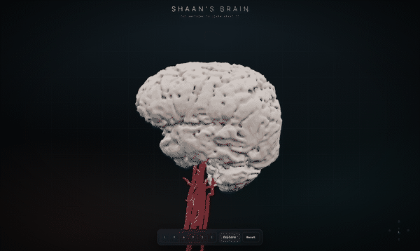
What I started with
A Philips Achieva 1.5 T scanner produced two studies on the same morning. One of my neck at 09:11, which quietly included a 3D angiogram of the arteries running up to my head, and one of my brain at 12:16.
2,430 DICOM files across 72 series. I converted everything with
dcm2niix and worked from the NIfTI output.
Here is the thing nobody tells you before you start: a clinical brain scan is not built for this. Every tutorial you find online assumes a 3D T1 MPRAGE, 1 mm isotropic, 180 or more slices, because that is what FreeSurfer and the rest of the neuroimaging world runs on. Hospitals skip it. Radiologists read slices, not volumes, so they order thick slices that look sharp on screen.
Every brain series in my scan is 5 mm thick with a 0.5 mm gap. Thirty slices for an entire head. You cannot build a surface from that. It is like trying to sculpt someone's face from thirty photographs taken 5 mm apart.
So before anything else, I had to find out whether the scan contained anything three-dimensional at all.
Step 1: Finding a series that could actually work
I ignored the series descriptions and measured the real voxel geometry of every single one. Two jumped out.
| Series | In-plane | Slice | Slices | Verdict |
|---|---|---|---|---|
| FLAIR, T1, T2 | 0.24 to 0.44 mm | 5.0 mm | 30 | gorgeous in-plane, useless in depth |
| SWI / VEN_BOLD | 0.60 mm | 1.5 mm | 101 | the only near-3D brain volume |
| s3DI_MC (angiogram) | 0.34 mm | 0.75 mm | 276 | sharpest volume in the dataset |
The susceptibility-weighted series is the reason this project exists at all. It gets acquired as a thin-slice 3D gradient echo to look for microbleeds. Nobody intends it as an anatomical volume. But at 0.6 by 0.6 by 1.5 mm it was the one brain series with enough depth resolution to mesh, and it had been sitting there the whole time.
The angiogram is sharper still, but time-of-flight imaging deliberately suppresses everything that is not moving, so it contains blood and almost nothing else.
Step 2: Getting a brain out of it
I assumed I would need a neural network for brain extraction and started looking at which one to install. I did not need one, because of a lucky quirk of the contrast: on SWI the skull is a dark shell that already separates brain from scalp. A threshold plus some morphology gets most of the way.
- Resample to 0.8 mm isotropic. Marching cubes on an uneven grid produces visible terracing along the thick axis, and resampling first is what kills it.
- Multi-Otsu with four classes. The second boundary separates brain tissue from CSF and bone.
- Erode hard, then keep only the largest connected blob. The erosion snaps the few remaining bridges through the eye sockets and skull base, and whatever survives is unambiguously the brain.
- Grow it back into the thresholded tissue, but bounded, so it reclaims real tissue without flooding through the skull into the scalp.
- Close and fill.
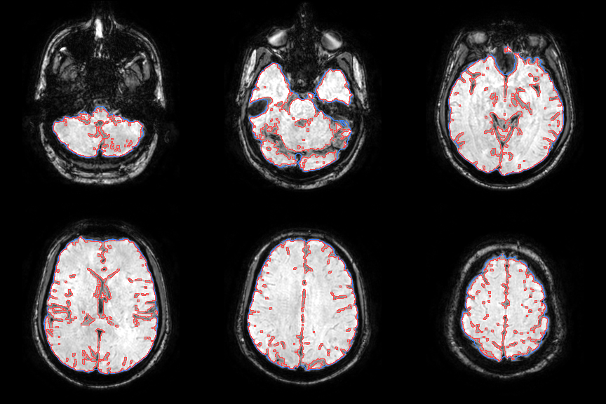
The envelope came out at 1348 cm³, a completely plausible adult brain. That was the moment I believed the whole thing was possible.
Step 3: Carving the folds back open
The mask from step 2 is a smooth bag. It bridges straight over every fold, so the first mesh looked like a peeled potato. Recognisably a brain. Completely bald.
The fix uses the same contrast trick a second time. CSF is dark on SWI, and every sulcus is full of CSF, so re-thresholding inside the envelope carves the folds back open.
Picking that threshold mattered more than I expected, so I swept it and looked at every result:
| Cut | Volume | What it looked like |
|---|---|---|
| p8 | 1241 cm³ | still bald |
| p10 | 1214 cm³ | a hint of texture |
| p13 | 1173 cm³ | real gyri, surface still intact |
| p16 | 1132 cm³ | good relief, cortex getting thin |
| p20 | 1078 cm³ | falling apart into crumbs |
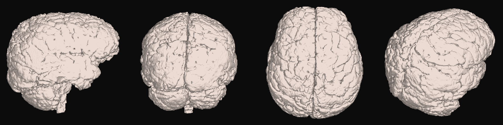
Out of pure habit I followed the threshold with binary_closing
and fill_holes. Both reseal the exact folds the threshold just
opened. The volume barely moved, 2.61 M voxels against 2.63 M, so every number
I was printing looked fine while the render was obviously wrong. There is a
comment in the code now telling future me not to put them back.
Step 4: The arteries
Time-of-flight angiography makes flowing blood far brighter than everything around it, so a high threshold finds the arteries immediately. It also finds subcutaneous fat, which is just as bright, and there is a lot of fat in a neck.
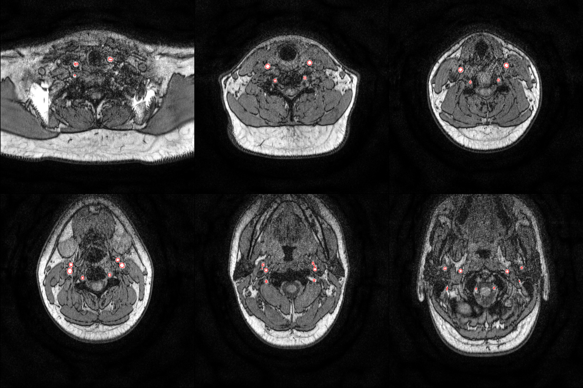
Three filters separate them.
How deep it sits. Fat lives in a shallow rim just under the skin. The carotids and vertebrals run 25 to 40 mm deep. So I build a solid silhouette of the neck, compute distance from the outside air, and demand at least 14 mm of it.
This took two attempts. My first silhouette was a plain tissue threshold, which comes out speckled, because muscle and bone fall below the cut and leave dark channels running all the way out to the air. That wrecks the distance transform. Only 1.7 M of 19 M voxels came back as deep, and the filter cheerfully deleted the arteries along with the fat. Blurring hard before thresholding makes the interior solid and fixes it.
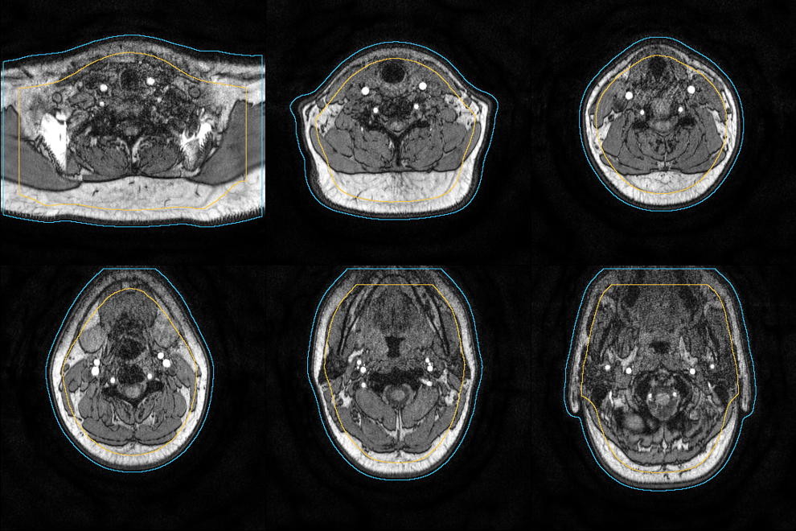
How elongated it is. Run PCA on each blob's voxel cloud. A tube puts nearly all of its variance on one axis.
How flat it is. This one caught me out. A slab of fat is elongated too, just along two axes instead of one, so it sails straight through the elongation test. Demanding that the second principal axis be under 16% of the first is what finally cleared out the last stubborn clumps.
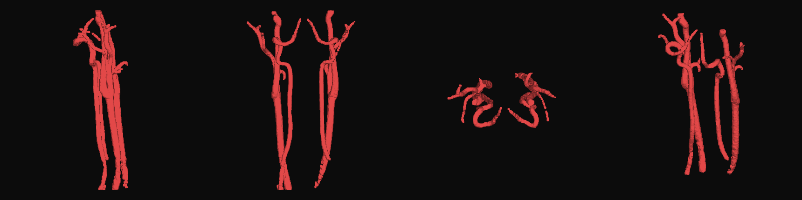
Step 5: Two scans, two coordinate systems
The brain comes from the 12:16 study and the arteries from the 09:11 one. Three hours apart means I got off the table and was repositioned, so identical scanner coordinates absolutely do not mean identical anatomy. Rendered together in raw scanner space, my carotid siphons floated a couple of centimetres away from the skull base they are supposed to hug.
So the angiogram gets rigidly registered onto the SWI with ANTs, restricted to the slab where the two overlap, so the non-shared neck and vertex cannot drag the fit off course.
Then a second problem appeared. Warping straight into the SWI grid cropped the carotids at the edge of the head field of view and threw away most of their length, 58 k voxels down to 14 k. So the output goes into a union grid instead: SWI orientation, so the arteries land in the brain's frame, but extended far enough down to keep the whole neck.
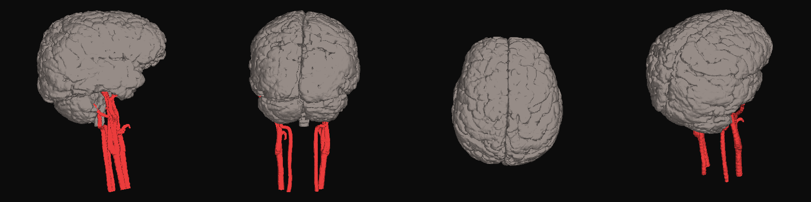
Step 6: The head
Neither series covers a whole head. The SWI is 233 mm wide but its field of view slices straight through the face. The sagittal T1 has the entire profile, nose and chin included, but is only 144 mm across.
They come from the same session, so they already share a coordinate frame, and the pipeline simply unions the two silhouettes. SWI gives the width and the skull vault, sagittal T1 gives the face.
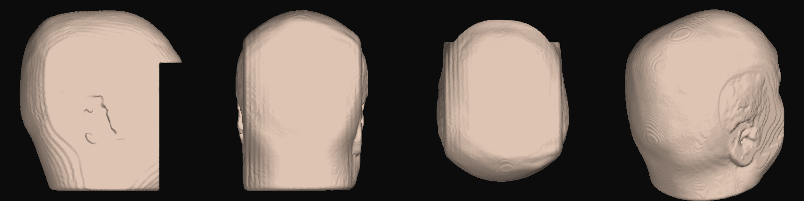
The head is defaced by default. Everything in front of the frontal lobe and below eye level gets flattened away. A 3D face reconstructed from MRI is biometric data and can be matched against a photograph, so the unmodified version is opt-in, writes only into a git-ignored folder, and never becomes a mesh.
Step 7: Naming every part
This is the step that turns a nice-looking blob into something you can learn from.
I warp the Harvard-Oxford atlases onto my scan using ANTs SyN registration and let the labels ride along. Doing it this way means every named region traces back to a published atlas instead of to a boundary I drew by eye.
The cortex problem. My first version used only the subcortical atlas, and when I switched the layers on, the result covered a small fraction of the brain. The entire cerebral cortex was unlabelled, which is to say most of it. Harvard-Oxford ships as two separate atlases and I had only warped one of them.
So the second version warps the cortical atlas too: 48 regions, which I group into lobes with an ordered set of matching rules. Order matters. "Temporal Occipital Fusiform Cortex" has to be matched before the plain "occipital" rule or it ends up in the wrong lobe entirely. The script prints anything it fails to assign, which is how I caught "Parietal Opercular Cortex" quietly slipping through on the first run.
The cerebellum has no Harvard-Oxford label at all, which surprised me. I derive it as the one large unlabelled blob left inside the brain mask once everything else is accounted for, eroding first to shed the thin unlabelled CSF rim that clings to the whole surface.
Final tally: twenty parts covering 95.4% of the brain by volume. The measured volumes all land in normal adult ranges, with the brain at 1173 cm³, white matter at 295 cm³, cerebellum 106 cm³, ventricles 11.1 cm³ and brainstem 27.9 cm³.
Step 8: Faking the light properly
A single-colour organic surface renders flat and plasticky. Screen-space ambient occlusion would fix it, at the cost of a postprocessing pass and several more dependencies.
So instead I compute ambient occlusion from the volume itself and bake it into the vertex colours. Blur the binary mask, then sample it at every vertex. Deep in a fold you are walled in on all sides, so the blurred value is high. On top of a ridge it is low. That maps directly onto how dark the crevice should be, costs a single convolution, and needs nothing at runtime beyond a colour attribute.
This one change did more for how the model looks than everything else combined.
Scanner space is RAS and glTF is Y-up, so vertices get mapped
(x, y, z) to (x, z, -y). That is a right-handed
transform with determinant +1. A left-handed one would silently mirror the
model and swap my left and right hemispheres, which is the kind of bug you do
not notice until it really matters.
The viewer
It is a three.js app with no build step and no CDN. three.js and three-mesh-bvh are vendored in, so the whole thing runs offline.
Minimal is the default. The model, a centred bar, the compass, nothing else. Click any structure and a leader line runs from the exact point you touched out to a card telling you what it is.
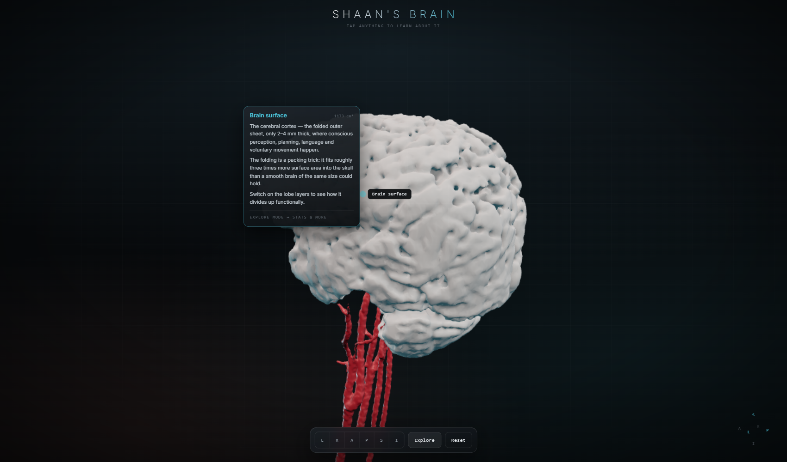
Explore brings in a symmetric pair of panels, layers on the left and detail on the right, so the layout stays balanced instead of leaning to one side. In this mode the callout shrinks to just a label on the end of the leader, because repeating the same paragraphs over the model was only covering it up.
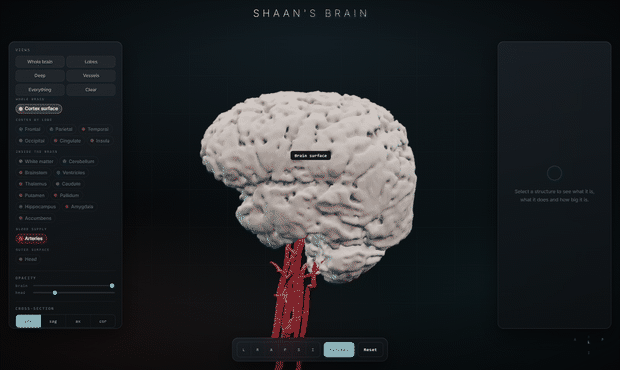
Above the chips, a row of Views sets a whole scene in one click, because arranging twenty chips by hand to get somewhere sensible is tedious and the useful combinations are predictable. Deep also fades the cortex for you, and deliberately leaves white matter off, since white matter is a big opaque shell wrapped around precisely the structures that view exists to show.
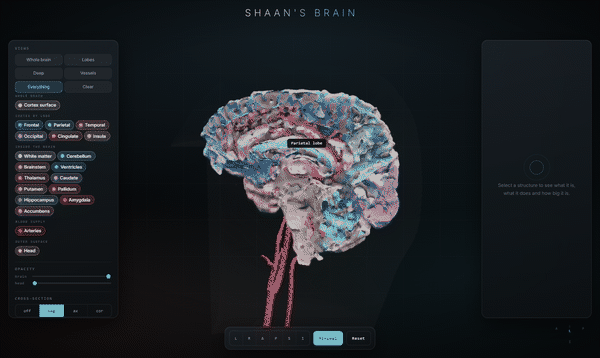
On a phone
The panels turn into bottom sheets sitting above the bar, with 38 px touch targets. The floating callout docks to the bottom, because a card tethered to a line is unreadable at that size, and since it is the only detail surface there it carries everything.
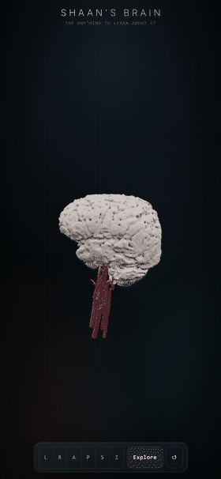
The bar needed real work. Six view buttons plus three controls overflowed a 390 px screen and pushed the last ones clean off the edge of the viewport, where they could not be tapped at all.
Making it fast
A benchmark script drives the viewer on a real GPU and reports frame times, draw calls and picking cost. On an AMD Radeon integrated GPU at 1600 by 950:
| Scene | Before | After |
|---|---|---|
| Brain only | 59.9 fps | 59.9 fps (vsync cap) |
| Lobes | n/a | 59.9 fps |
| Deep | n/a | 59.9 fps |
| Everything on | 28.6 fps | 59.9 fps |
| Everything, close-up | 14.5 fps | 48.3 fps |
| Raycast per pick | 43.4 ms | 0.427 ms |
That is measured with twenty parts and 1.4 M triangles on screen, roughly double the geometry of the before column. Not one triangle was removed.
Picking was the worst offender by miles. Hover raycasting was brute-force testing every triangle of every visible mesh on every single pointer move. 1.3 M triangles, 43 ms per event, on an input that fires faster than the screen refreshes. A BVH made it about a hundred times faster. Raycasts are now also coalesced to one per frame and skipped entirely while you are dragging, since the answer would be thrown away anyway.
Everything was permanently flagged transparent, even at full opacity. That dumped every nested shell into the sorted blend pass with no early-Z rejection. Opaque parts render opaque now, which is what halved the draw calls.
Clearcoat and sheen get dropped below 50% opacity. A second specular highlight you cannot possibly see through a 22%-opaque surface is pure wasted cost. The scalp, a full-screen near-transparent shell and the most expensive single thing on screen in the close-up case, dropped to a plain standard material entirely.
Separately, the whole model used to download before anything appeared. All twenty parts, sequentially, 27.8 MB, even though only two are visible at the start. Now the visible pair loads in parallel and the rest streams in behind you while you are already orbiting, which took first render down to 10.8 MB.
Everything that went wrong
The cortex went hollow
I switched materials to FrontSide so the GPU could cull back
faces. Free performance, obviously. It benchmarked beautifully, 60 fps with
everything on. It also did this:
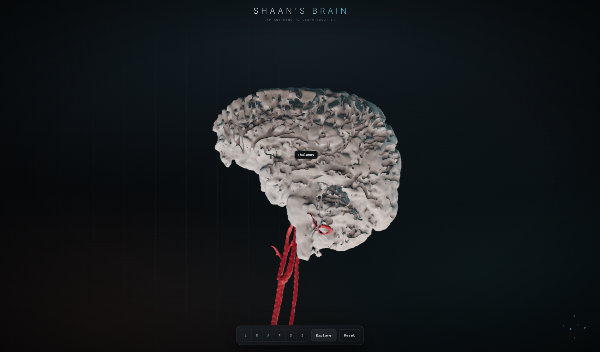
These meshes come from marching cubes on a non-watertight
mask, and their triangle winding is mixed. Measuring it afterwards was
illuminating: the head is 99% correctly wound and watertight, and rendered
perfectly. The brain is neither. trimesh.fix_normals() changes
nothing at all, because it cannot orient a mesh that is not watertight in the
first place.
Everything rendered as a black silhouette
Geometry loaded, shape was right, every mesh pure black. The GLB files had no normal attribute, so every lit material had nothing to shade with.
The leader lines were invisible
My first callout pushed its label away from the surface along the surface normal. That looks perfect in profile, and collapses to exactly zero screen length whenever the normal happens to point at the camera. Which is most of the time, because you tend to click the thing facing you. The leader is routed in screen space now.
Evans' index, three wrong answers in a row
Evans' index is a ratio of ventricle width to skull width, normally a single caliper measurement a radiologist makes on one chosen slice. Automating it produced three confident, plausible, completely wrong numbers before I got one I trusted.
- 0.325. Ventricles segmented from SWI using "dark means CSF". Wrong, because on SWI the veins are the darkest thing in the brain, so it traced blood vessels and sulci.
- 0.607. Ventricles from T2 this time, where CSF is unmistakable, but maximising the ratio across slices. That just finds a slice where the denominator is degenerate. It reported 7.9 mm ventricles inside a 13.1 mm skull.
- 0.313. Slice picked by widest frontal horn, denominator taken globally. Closer, except the frontal horns it found were in the posterior fossa. It had measured the fourth ventricle.
- 0.194. Atlas used to identify the lateral ventricles specifically, T2 intensity for the actual boundary, frontal horns taken as the front 45% of their own extent.
Any of the first three would have read as a real finding. The only reason I caught them is that I rendered the exact slice each measurement came from and looked at it. A number from an automated pipeline is worth nothing without a picture of what it measured.
What the numbers actually mean
Not every part of this model is the same kind of thing, and the difference matters if you are reading the volumes.
Measured from the scan. The brain surface, the arteries, the head. Every vertex traces back to voxel intensities in the DICOM.
Positioned from the scan, shaped by an atlas. The lobes, white matter, all the deep nuclei. These are Harvard-Oxford structures elastically warped onto my anatomy. Their location comes from my scan; their shape is largely inherited from the template. So the volumes shown for them are closer to "the atlas structure after warping" than to an independent measurement of me. Lobe boundaries especially are a convention, not something visible in the tissue.
Worked out by subtraction. The cerebellum is whatever the atlases did not label. At 105.9 cm³ against a typical 120 to 160 cm³, it is probably under-segmented.
Chosen, not measured. Every colour, and the smoothing. Taubin smoothing and the pre-mesh blur genuinely move the surface, so this is a smoothed likeness rather than a millimetre-exact cast.
And the brain volume itself is threshold-dependent. It moves between 1078 and 1241 cm³ across reasonable choices of that cortical cut, which is worth remembering before comparing it against anything.